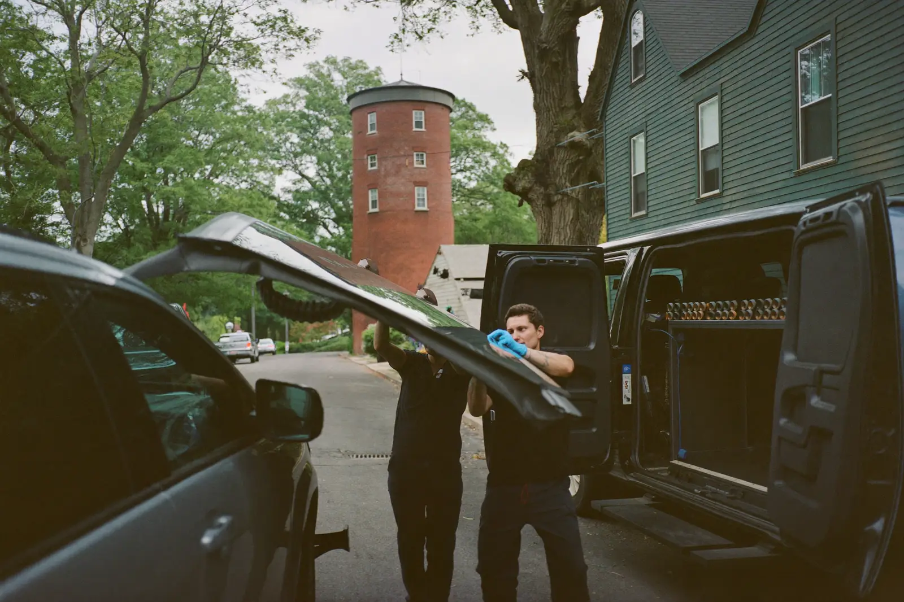

Everything below is done at your address — driveway, street, or workplace lot — across Haverhill, Bradford, and the surrounding Merrimack Valley towns.

When damage is too large, too long, or sitting in the wrong place to be filled with resin, the glass has to come out. We cut the old windshield free, clean and prime the pinch weld, and bond new glass in with automotive urethane.
This matters more than most drivers realise: a bonded windshield carries part of the roof’s structural load and backs up the passenger airbag. A poorly seated windshield is not just a leak risk, it is a safety one.
You need this if a crack has reached the glass edge, if there are multiple cracks running together, or if the damage sits directly in your line of sight. Left alone through a Haverhill winter, a manageable crack becomes a windshield that fails inspection and can let water into the cabin.
Read the detail on windshield replacement in Haverhill, including how Massachusetts glass claims work. Call us today for windshield replacement in Haverhill.
A stone chip is a small cone of broken glass with air trapped inside it. We pull that air out under vacuum, push clear resin in under pressure, and cure it hard with ultraviolet light. The damage stops spreading and largely disappears.
This is the job to catch early. Chips are repairable while they are clean, small, and recent — roughly quarter‑sized, single impact point, outside the driver’s direct viewing area.
Ignore it and physics takes over. Every cold morning where you blast the defroster onto frozen glass puts the inner and outer layers at different temperatures, and that stress runs the chip out into a crack. What would have cost under $150 becomes a full replacement.
See the full breakdown of chip and crack repair in Haverhill. Call us today for windshield chip repair in Haverhill.
Door glass and rear glass are tempered, not laminated. They do not chip or crack — they let go all at once into thousands of blunt cubes. There is no repair path, only replacement.
The job is more involved than it looks. The door panel comes off, the regulator and channels get inspected, and every last glass cube gets vacuumed out of the door cavity and the seat rails. Cubes left in the door will rattle for years and can jam the window mechanism.
Anyone dealing with a break‑in, a parking lot mishap, or a rear window shattered by a slammed hatch needs this. Driving with an open window opening means weather in your interior and an obvious invitation to whoever passes the car overnight.
More on side and rear window replacement in Haverhill. Call us today for side and rear window replacement in Haverhill.
Most vehicles built in the last several years mount a forward‑facing camera to the windshield behind the rearview mirror. It feeds lane‑keep assist, adaptive cruise control, automatic emergency braking, and traffic sign recognition.
Replace the glass and that camera moves. A shift of a millimetre or two at the mirror translates into a meaningful aiming error a hundred feet down the road, so the system has to be retaught where centre and level actually are. Some manufacturers require a static procedure with targets, some a dynamic road drive, and some both.
If your car has any of those features and the windshield has been replaced, this is not optional. Skipping it leaves the safety systems switched on but aiming wrong — braking late, or reading a lane line that isn’t where the camera thinks it is.
We quote recalibration alongside the glass rather than adding it afterwards. Call us today for ADAS recalibration in Haverhill.
This is how we work by default rather than an upcharge tacked on at the end. We bring the glass, the urethane, the setting tools, and power to your address and do the work where the car already sits.
It solves the obvious problem: a car with a broken window is the exact car you do not want to drive across town to a shop, and often the one you legally should not. It also means no waiting room and no arranging a ride home.
Anyone working a full day, at home with kids, or without a second vehicle benefits most. The one real constraint is winter — urethane needs to cure, so we need somewhere the car can sit undisturbed and out of heavy snow for the drive‑away window.
Call us today for mobile auto glass service in Haverhill.
Tell us where the damage sits on the glass and roughly how big it is. We will tell you whether it is a repair or a replacement, and quote it either way — no charge for the answer.
Call (351) 900-7501